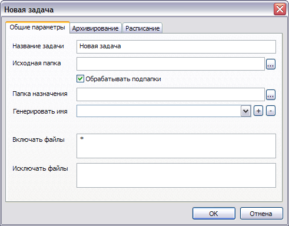
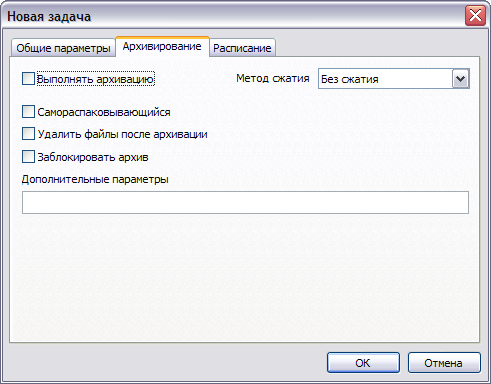
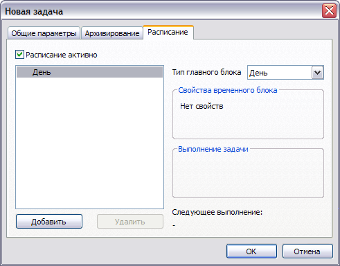
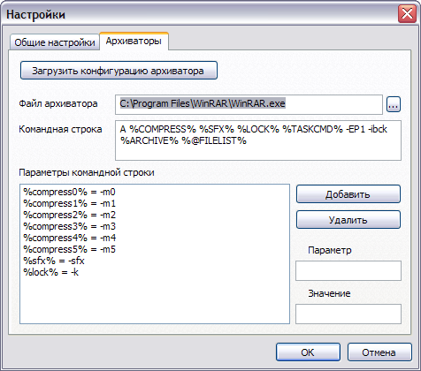

Small Backup |
|||||||||||||||||||||||||||||||||||||||||||||
|
В этом разделе приводится описание работы с программой Small Backup - программа для резервного копирования данных. Для того что бы указать что и куда копировать нужно создать задачу. Основная информация, которую содержит задача - из какой папки брать файлы (исходная папка) и куда их копировать (папка назначения). Т.о. для каждой папки которую вы хотите резервно скопировать необходимо создать свою задачу. Ниже вы можете узнать подробнее как работать с задачами, назначать им параметры, составлять расписание. Так же вы узнаете как происходит процесс копирования. Добавление задачиДля добавления задачи вы можете выбрать пункт меню Задача > Новая, или нажать клавишу Insert. При этом появится окно, на котором будет три вкладки.  Вкладка Общие параметры. Сдесь можно указать общие параметры, такие как название задачи, исходная папка (откуда копировать файлы), папка назначения (куда копировать), указать обрабатывать ли подпапки. Так же можно задать строку, содержащую макросы работы с текущей датой в поле Генерировать имя. Эти макросы буду раскрыты при выполнении задачи, т.о. можно генерировать имя папки назначения исходя из текущей даты. Подробнее об этом вы можете прочитать ниже. Остались последние два параметра. Включать файлы - маска файлов, которые нужно скопировать, Исключать файлы - маска файлов которые нужно пропустить. По-умолчанию в поле Включать файлы стоит звезда, а поле Исключать файлы пустое, что означает обрабатывать все файлы.  Вкладка Архивирование. В качестве архиватора вы можете использовать любой архиватор, но сначала нужно настроить Small Backup. Подробнее о настройке архиваторов вы можете прочитать ниже. По-умолчанию Small Backup настроена на работу с архиватором WinRAR.  Вкладка Расписание служит для задания периодического выполнения задачи. Подробнее о работе с расписанием вы можете прочитать ниже. После того как вы нажмёте кнопку ОК задача добавится в список и вы сможете изменить её параметры\запустить\удалить. Генерирование имени папки назначенияДля генерирования имени папки назначения можно использовать текущую дату. Что бы подставить какое-либо значение, нужно заключить строку в знаки процента '%'. Поддерживаются следующие символы (регистр имеет значение):
Вот несколько примеров (если считать что текущая дата 18:06, 08.07.2006):
Строковые значения берутся из настроек Windows, т.е. если у вас русская версия, месяцы будут выводиться на русском (январь, февраль и т.д.), если английская - соответственно на английском (january, february и т.д.). Настройка архиваторовТ.к. программа использует внешние архиваторы, сначала необходимо настроить командную строку для используемого архиватора. По-умолчанию настройки подходят для WinRAR. Кроме того, в папке с программой находится файл Archivers.ini, который содержит настройки для разных архиваторов. Вы можете загрузить с сайта последнюю версию этого файла, с новыми архиваторами. Сначала нужно открыть окно с настройками архиватора. Для этого выберите пункт меню Настройки > Настройки и выберите вторую вкладку (Архиваторы).  Для начала нужно указать имя файла архиватора. Это исполняемый файл (.exe). Далее нужно заполнить поле Командная строка. В этой строке можно использовать макросы, некоторые из которых (в зависимости от настроек задачи) будут заменены значениями, которые задаются в списке Параметры командной строки. В данном случае командная строка это "A %COMPRESS% %SFX% %LOCK% %TASKCMD% -EP1 -ibck %ARCHIVE% %@FILELIST%". Допустимы следующие макросы:
Значения следующих макросов задать нельзя, они будут сгенерированы программой во время выполнения задачи.
A -m2 -sfx -EP1 -ibck "c:\backup" @"C:\DOCUME~1\Z\LOCALS~1\Temp\smb463.tmp" При запуске архиватора с данной командной строкой, он выполнит архивацию файлов, как и ожидалось. Так же вы можете загрузить параметры других архиваторов. Для этого нужно нажать на кнопку Загрузить конфигурацию архиватора и выбрать нужный архиватор. Работа с расписаниемВ программе можно гибко настроить выполнение задачи по расписанию, но сначала придётся немного поучиться. Расписание представляет из себя т.н. дерево расписания. Элементы дерева расписания - временные блоки. Временной блок может быть неделей, днём или часом. Родительский временной блок может иметь несколько дочерних, притом дочерние временные блоки "меньше" родительских, т.е. день может быть дочерним по отношению к неделе, а час по отношению ко дню. Всегда есть хотя бы один главный временной блок, все остальные блоки являются дочерними по отношению к главному. Тип главного блока определяет периодичность с которой работает расписание. Например, если тип главного блока час, то заданное расписание будет повторятся каждый час. Если же тип главного блока неделя то расписание будет повторятся с периодичностью в неделю. У временных блоков есть параметры. Для дня - это день недели (например, понедельник, вторник), для часа - час (например, 8, 13, 18). Кроме того можно задать период временного блока - "с ... по ...". Например, с понедельника по пятницу, с 8 часов до 16. У временного блока типа час есть свойства выполнение задачи. Т.е. что бы задать выполнение задачи нужно обязательно создать хотя бы один временной блок типа час. Эти свойства - это время выполнения (в минутах) и интервал через которые повторять выполнение задачи (тоже в минутах). Это всё была теория, сейчас покажу несколько примеров.
Вы можете создавать сколь угодно сложные схемы, можно задать индивидуальные параметры для каждого дня недели и для каждого часа, а можно задавать параметры для интервалов дней и часов. Легко можно составить простое расписание, например, повторять каждые x минут. Для удобства в окошке выводится время следующего запуска задачи при данном дереве расписания. Выполнение задачиКогда задача начинает выполняться происходят следующие действия:
Выполнение задачи можно прервать в любом месте, кроме момента архивирования. Время предыдущего запуска запишется даже если задача была прервана на самом раннем этапе (например, невозможно создать папку назначения). Если выполнение задачи запланировано, например, каждую минуту, а время выполнения задачи больше минуты - сообщение о том что невозможно запустить задачу добавится в файл журнала (SmallBackup.log). Во время выполнения задачи вы можете видеть окно с информацией о процессе выполнения. При этом некоторые события записываются в лог, каждое сообщение начинается с типа сообщения - символа в квадратных скобках. Типы сообщений в окне выполнения задачи:
Так же некоторые события записываются в файл журнала (SmallBackup.log). Сначала в квадратных скобках указывается текущая дата и время, затем тип сообщения, если событие связано с задачей - в квадратных скобках имя задачи. Далее пишется текст сообщения. Типы сообщений в файле-журнале:
Размер файла журнала можно ограничить в настроках программы. |
|||||||||||||||||||||||||||||||||||||||||||||